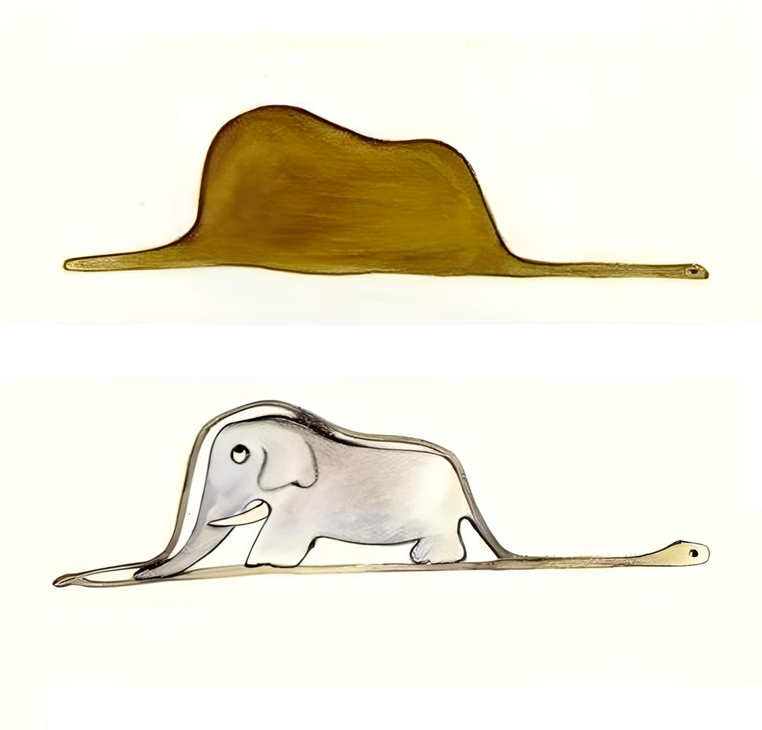

A desordem invisível do coração
Mostrei minha obra-prima às pessoas grandes e perguntei se o
meu desenho lhes fazia medo.
Responderam-me: "Por que é que um chapéu faria medo?"
O que você vê? Talvez uma montanha ou um chapeu porém,
acreditaria se eu lhe dissesse que na verdade este desenho
uma jiboia que engoliu um grande elefante?
"Pare de graça, isto claramente é um chapéu!"
é o que muito provavelmente um adulto diria para a criança
que desenhou e lhe mostrou este desenho. Mas a única coisa que
esta de fato clara nesta situação, é como os adultos não tem
nenhuma capacidade de ver além do que está a sua frente.

Desenhei então o interior da jibóia, a fim
de que as pessoas grandes pudessem compreender. Elas têm sempre
necessidade de explicações.
Agora ficou claro né? Ok, mas a onde estamos querendo chegar?
Este desenho é significativo porque destaca a diferença de percepção
entre crianças e adultos. Para os adultos, o desenho pode parecer
um mero rabisco ou eles acreditam ser um chapéu, pois não conseguem
ver o elefante escondido dentro da jibóia. Porém, para a imaginação
de uma criança, a cena ganha vida, ilustrando as possibilidades ilimitadas
de criatividade e a riqueza do mundo interior.
Tente usar sua imaginação e imagine um carneirinho dentro desta caixa:
Conseguiu como ele era?
Bem, no livro o pequeno principe imagina
um pequeno carneirinho dentro da caixa para
conseguir levado para casa.
O que você imagina diz muito sobre você,
o que você deseja, o que tem medo,
o que você amo ou odeia. Por isso quando eramos
crianças e assistiamos algo
que nos deixava com medo, tinhamos pesadelos
e imagianavamos monstros enormes mas,
que no final, não passava da nossa imaginação.
O Pequeno Príncipe é uma bela história de reflexão e aprendizado.
Com uma escrita fluída e simples, que envolve desde o público infantil
até o mais maduro, o autor incita o leitor a reavaliar seus valores,
levando-o a repensar as verdadeiras riquezas da vida. Amor, amizade, trabalho,
dinheiro, política… O quanto esses itens são fundamentais
em nossas vidas? Quais deles são - ou devem ser - nossas reais prioridades? Guiados pelo coração bondoso
de uma criança,
um pequeno príncipe que veio de muito longe, reaprendemos que o sentido da vida está nas pequenas
coisas;
que o essencial é invisível aos olhos.
A drama gira em torno das experiências do Pequeno Príncipe,
um jovem que sai de seu planeta e segue viajando em busca de novos mundos
e de inúmeras descobertas. - Ele quer saber e aprender cada vez mais!
Em uma de suas andanças o jovenzinho vai parar na Terra, mais especificamente
no meio do deserto, local em que encontra um piloto perdido após um pouso complicado.
Enquanto o piloto tenta consertar seu avião, ele e o pequeno príncipe criam um forte
laço de amizade, compartilhando histórias e aprendizagens. O pequenino, com seu coração
puro e seu instinto curioso, leva o piloto - e o próprio leitor - a pensar sobre as certezas da vida.
É na simplicidade dessa criança, que compreende a beleza de uma estrela e o valor de uma única flor,
que aprendemos a enxergar a vida sob um novo olhar.
O que torna o livro O Pequeno Príncipe um clássico que perpetua entre gerações é sua atemporalidade.
As mensagens por trás da leitura não são apenas frutos da escrita do autor, mas sim da interpretação do
leitor,
que dependendo da fase que está vivendo encarará a leitura de uma maneira diferente.
Trata-se de uma história poética que fala sobre nosso dia a dia, sobre nossos amores, nossas amizades,
nossa ganância e nossos erros tão comuns e repetitivos: o homem que não vê com o coração, que só se
importa com o trabalho,
que só cultiva o dinheiro, que não tem bons amigos e, principalmente, o homem que não é capaz de manter
viva a criança dentro de si.
São infinitas as passagens reflexivas da obra.